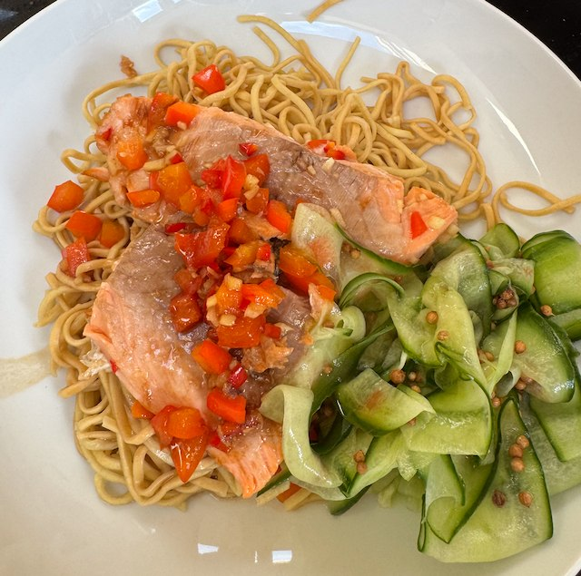

Salmon Teriyaki Noodles

Serves: 4
Cook Time: 20 min
From BBC Good Food. Serve with cucumber pickle
Ingredients
- 4 salmon fillets, skin removed
- 1 red chilli, diced
- 1 piece ginger, chopped small
- 1 tbsp mirin
- 1 tbsp soy sauce
- 2 tbsp teriyaki sauce
- 1 red pepper, diced
- 250g egg noodles
Method
Sauce. Mix the chilli, ginger, mirin, soy sauce and teriyaki sauce in a bowl. Then add the salmon and let marinade for 5-10 min.
Salmon. Heat pan to hot. Add oil, salmon and fry for a few min. Flip, turn heat to medium, add red pepper, sauce and cook for a few min more.
Noodles. Boil 1.5 litre water with 1 tbsp table salt. Cook noodles following packet directions. Drain.
Put the noodles on a plate, with the salmon and sauce on top.